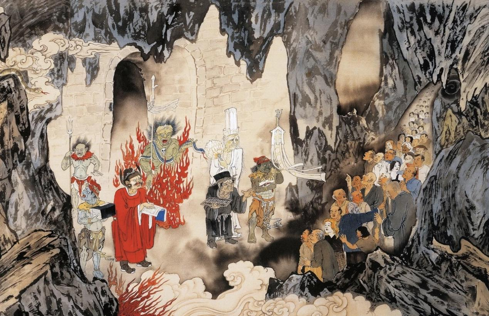
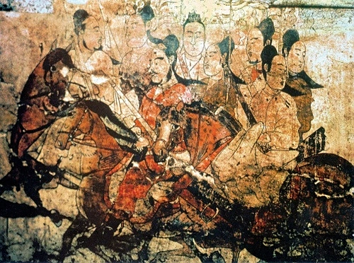

吴道子（约680年—759年），又名道玄，唐代著名画家，画史尊称画圣。
吴道子仅以焦墨勾出狰狞鬼卒与沸腾油鼎，再于关键处薄罩赭石、朱砂，画面顿阴森迫人，竟使长安屠夫“惧而改业”。
杨子华的绘画风格在《出行图》中得到了淋漓尽致的体现。画面中的人物形象丰满圆润，线条流畅而富有张力，色彩鲜艳而和谐。
杨子华，北齐画家，曾任直阁将军、员外散骑常侍，为北齐武成帝高湛宫廷御用画家，世称“画圣”
《地狱变相》· 吴道子

这种“略施微染”的吴装新格，将岩彩从装饰性赋色升华为精神性表达，矿物颜料的永恒质感与墨线的瞬时应激在此达成神性共振。
《出行图》· 杨子华

他特别擅长描绘贵族人物和车马，这种技艺在《出行图》中得到了完美展现。画面中的车马生动逼真，仿佛能听到马匹的嘶鸣声，感受到车轮的滚动声。